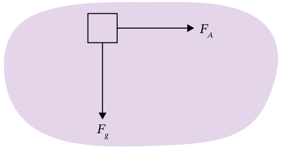
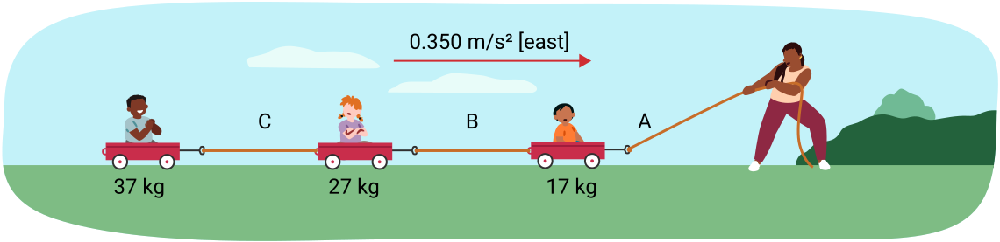

Select one of the following settings: A basketball game, building a house, or driving a car. Describe one way in which each of the following forces occurs in that setting, and explain whether that force is helpful or unhelpful. Use the same setting for all parts of this question.
Applied force. (2 marks)
Force of gravity. (2 marks)
Normal force. (2 marks)
Force of friction. (2 marks)
Tension force. (2 marks)
Create a free-body diagram for a car that is slowing down along a flat road using its brakes. (6 marks)
Describe, in words, a situation in which an object has the following free-body diagram. (5 marks)

A bus is travelling [east]. One of the passengers on the bus is holding a helium-filled balloon. Using the concept of inertia, explain what would happen to the balloon from the perspective of the bus’s passengers when:
The bus speeds up (3 marks)
The bus slows down (3 marks)
The bus makes a right turn toward [south] (3 marks)
In Ontario, the law currently does not require seat belts on large buses, but seat belts are required in cars. With reference to Newton’s second law, explain why this may be the case. (5 marks)
With reference to Newton’s third law, explain how a swimmer experiences a net force [forward]. (3 marks)
The Earth’s gravitational field is
9.8 N/kg [down]. Find the force of gravity felt by a 0.100 kg object and by a 100.00 kg object, and calculate the acceleration due to gravity of each object. Your solution does not need to use the GUESS structure, but should show all work. (6 marks)
Use a GUESS problem-solving structure for the next seven problems.
An object experiences an acceleration of 2.30 m/s² [east] due to forces of 352 N [west], 145 N [east], 8.250 N [west], and 691.0 N [east]. What is the mass of the object? (4 marks)
A 10.0 kg object experiences forces of 855 N [north] and 256 N [south]. What is the acceleration of the object? (4 marks)
A 1,432.0 kg object experiences an acceleration of 2.56 m/s² [up]. What is the net force on the object? (4 marks)
Two cars are competing in a 400.0 metre race. Both cars start at rest. The first car, with a mass of 1,370.1 kg, experiences a net force of 3,806 N [forward]. The second car, with a mass of 1,720.3 kg, experiences a net force of 4,101 N [forward]. How long will each car take to complete the race, and which car will win? (8 marks)
An adult is pulling three children on three wagons linked by three ropes A, B, and C. The combined masses of each child and wagon pair are 17 kg, 27 kg, and 37 kg from front to back. The wagons accelerate at 0.350 m/s² [east]. Determine the tension force applied by each rope assuming there is no friction in this system. (7 marks)

A 150.0 kg box is at rest on the floor. What is the normal force acting on the box? (3 marks)
Venus has a gravitational field of 8.87 N/kg [down] while Mars has a gravitational field of 3.71 N/kg [down]. The coefficient of kinetic friction between copper and glass is 0.53. If copper pucks are sliding horizontally on glass on Venus and on Mars at the same time, starting with a speed of 20.0 m/s, which puck will stop first and how much time will pass between the two pucks stopping? (8 marks)
Refer to the Lab activity: Relationship between force, mass, and acceleration in Learning Activity 2.6 to complete the following question.
A lab report is a piece of scientific communication with a standard format. In this course, a lab report includes a descriptive title, and seven sections: Purpose, materials, apparatus, method, results, analysis, and conclusion. In the same document as the rest of your assignment, write a lab report for the Relationship between force, mass, and acceleration lab. The purpose, materials, apparatus, and method are provided, so copy them. Format the results section to record the outcome of the lab. Answer the analysis questions in the analysis section of your report, and write your own conclusion that responds to the purpose of the lab. Be sure that your report is professionally formatted and spell-checked. (10 marks)